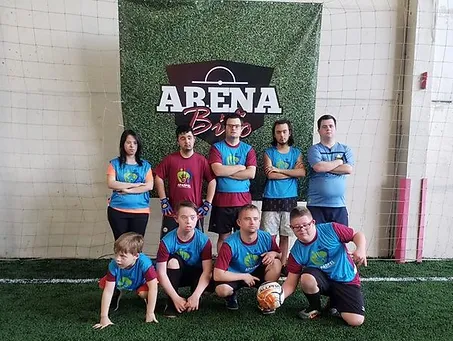
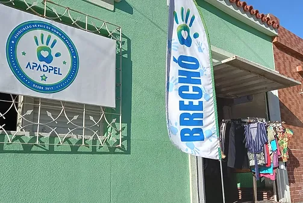
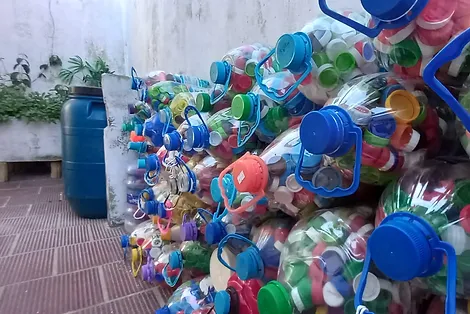

Um pouquinho sobre nós!
A associação surgiu com um grupo de mães, que se reunia para lutar em benefício de seus filhos com Síndrome de Down, dessas reuniões surgiram grandes amizades que formaram o grupo Super Mães 21 e dele surgiu a APADPEL.
A associação dispõe de diferentes meios e formas de ajudar e apoiar as famílias com membros com Síndrome de Down na cidade de Pelotas - RS.
Treinamento de futsal

Incentivado pelo Ponte Preta S21 Futsal Down, APADPEL lançou em 2022 seu time de futsal de atletas com Sindrome de Down, o primeiro no Rio Grande do Sul. Com apoio de todos logo alcançaremos os campeonatos regionais e brasileiro.
Aconchego T21

Com este projeto, a APADPEL tem como objetivo dar apoio as famílias de pessoas com síndrome de down, então se você conhece alguém com SD, fale da associação, peça para entrar em contato!
Brechó Solidário APADPEL

Com datas marcadas e divulgadas em nossas redes sociais, o Brechó Solidário APADPEL já é uma nas nossas maiores fontes de renda.
Também recebemos doações, então se tiveres algo a doar, clique no botão e entre em contato, com certeza qualquer quantidade de peças irá colaborar muito.
Reciclagem APADPEL

Este é mais um modo que você tem de ajudar a associação, juntando tampinhas plásticas de qualquer tipo e lacres de latinhas de alumínio.
Você entra em contato que combinamos a coleta dos mateiais.